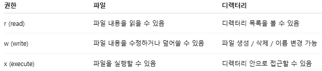
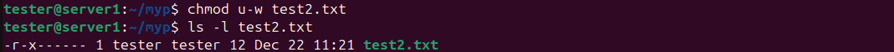
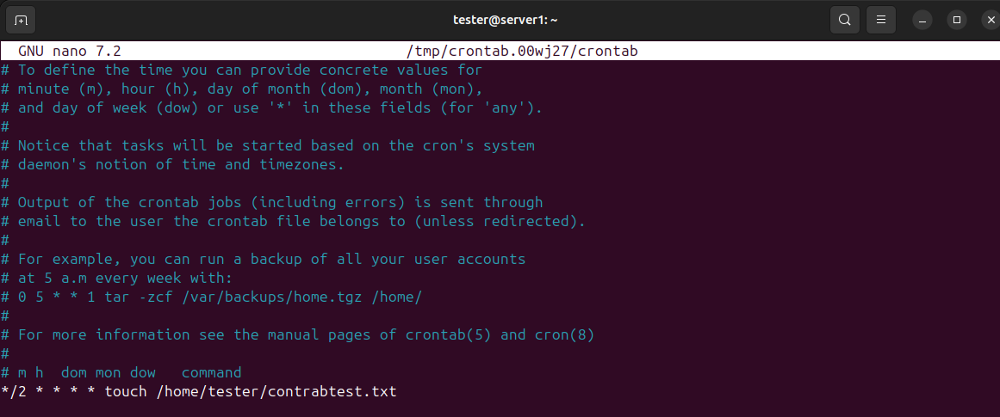

리눅스를 운용하기 위해선 먼저 절대 경로와 상대 경로를 이해할 필요가 있다.
절대 경로는 /(루트 디렉토리)를 기준으로 하지만 상대 경로는 현재 위치를 기준으로 한다.
보통 절대 경로를 사용하지만 실행 파일을 실행하려고 할 때 반드시 상대 경로를 사용한다.
cd 명령어는 현재 작업 중인 디렉토리에서 다른 디렉토리로 이동할 때 사용한다.
예)cd ~/a/b/c
예)cd ../ 현재 위치에서 상위 디렉토리로 이동
예)cd ~ 홈 디렉토리로 이동예)cd / 루트 디렉토리로 이동ls (목록만 표시)ls -l (권한,소유자,크기 등 상세하게)
ls -la (l 속성에 더해서 숨김 파일까지 표시)
mkdir 
mkdir -p (상위 디렉터리까지 한번에 생성)
rm -r (r 옵션은 하위 디렉터리까지 한번에 삭제)rm -rf 무조건 삭제rm -ri 삭제 전 물어봄(추천)touch (빈 파일 생성)
cat & echo (파일 생성 및 내용 입력)echo는 문자열을 출력하고, cat은 파일 내용을 출력하는 것이 기본 기능이다.
파일 생성이나 내용 입력은 리다이렉션(>, >>)을 사용한 응용 방식이다. 두 명령어 모두 '>' 사용 시 덮어쓰고, '>>' 사용 시 기존 내용 뒤에 추가한다.
보통 한 줄 입력은 echo, 여러 줄 입력은 cat을 사용한다.
cp (파일 및 디렉터리 복사)
test.txt 파일을 a.txt로 복사한다.(원본은 유지된다.) test.txt 파일을 myp2 디렉터리로 복사한다. 디렉터리 myp2를 myp3로 복사한다.(디렉터리 복사에는 -r 옵션 사용)
mv (파일 이동 및 이름 변경)a.txt 파일을 b.txt라고 파일명을 변경한다. b.txt 파일을 myp2 디렉터리로 옮긴다. 디렉터리 myp3를 myp3-3로 디렉터리명을 변경한다.
리눅스에서는 파일과 디렉터리에 대해 읽기(r), 쓰기(w), 실행(x) 권한을 관리한다.
권한의 대상은 소유자(user), 그룹(group), 기타 사용자(other)로 나뉜다.
chmod (권한 부여)권한 부여 방식은 숫자 방식과 심볼 방식 2가지로 나뉜다.
숫자 방식이 자주 쓰이며 의미는 다음과 같다.
chmod [유저][그룹][그외]. r=4 w=2 x=1.

소유자는 rwx(4+2+1=7)권한을 가지고 그룹과 다른 이용자들은 rx(4+1=5) 권한만 있다
실행 파일이 아니어도 x권한을 부여할 수 있다.
심볼 방식 의미는 다음과 같다.
chmod [대상][연산기호][권한]. 대상 (u g o).연산 (+ - =).권한 (r w x)

소유자의 권한만 rwx로 바뀌었다
소유자의 권한에서 w을 뺏다
"=" 연산은 기존의 권한을 빼고 지정 권한만 설정한다.
# 꼭 알아둬야 할 것 #
디렉터리 권한에서 실행(x)은 해당 디렉터리에 접근할 수 있는 권한을 의미하며, 읽기(r) 권한이 있어도 실행(x) 권한이 없으면 내부 파일에 접근할 수 없다. 파일 삭제 권한은 파일 자체가 아니라 디렉터리의 쓰기(w)와 실행(x) 권한에 의해 결정된다.
프로세스란 실행 중인 프로그램이다.(예) code, sshd, ptyhon, vim 등등
ps
현재 터미널에서 실행 중인 프로세스만 표시 (시스템 전체 프로세스는 아님)
ps aux
시스템 전체 프로세스를 출력하므로 매우 많은 정보가 표시된다. 모든 내용 이해할 필요 없음.
ps -eo pid,user,comm | grep 프로세스명 
해당 프로세스의 pid,user,comm 만 출력
top 
실시간 실행중인 프로세스들 목록. PID번호가 중요함.
kill PID번호해당 프로세스 종료
만약 파이어폭스를 종료하고 싶으면 kill 4256을 입력하면 된다.
top의 정렬 순서는 실시간으로 cpu/메모리를 많이 사용하는 프로세스부터 나온다. 프로세스는 ps로 확인하고, top으로 관찰한 뒤, kill로 종료한다.
서비스는 ps가 아니라 systemctl로 관리한다.
사용하는 systemctl의 명령어는 다음과 같다.
systemctl status 서비스명
systemctl start 서비스명
systemctl stop 서비스명
systemctl restart 서비스명
systemctl enable 서비스명
systemctl disable 서비스명
systemctl is-enabled 서비스명
새로운 서비스를 시작할 경우의 실행할 명령어 순서는
restart - > enable -> status로 상태 확인.

스크린샷 내용처럼 activate로 뜨면 정상 작동 중이다.
enable 명령어를 써줘야 재시작했을 때 자동으로 서비스가 시작된다.
정해진 시간에 명령을 자동으로 실행하는 기능 crontab -l 등록된 작업 확인 crontab -e 작업 편집 crontab -r 작업 삭제
크론탭 설정은 * * * * * 이며, 왼쪽부터 분 시 일 월 요일을 뜻한다. 월은 1~12로, 1월부터 12월을 의미한다. 요일은 0 또는 7=일요일, 1=월요일 ~ 6=토요일이다.
숫자는 고정값을 의미하며, */N 형태는 N 간격 실행을 의미한다.
예를 들어 * * * * * 은 매분마다 실행된다. 예를 들어 */2 * * * * 은 2분마다 실행된다.

crontab -e 명령을 실행하면 편집기를 고르는 메뉴. 1번을 선택
맨 아랫줄에 */2 * * * * touch /home/tester/contrabtest.txt 추가
2분마다 contrabtest.txt 파일을 생성한다는 뜻
Ctrl + o(저장)후 엔터 그 다음 Ctrl + x(종료)

13:48에 파일 생성

13:50에 파일이 수정된걸 볼 수 있다